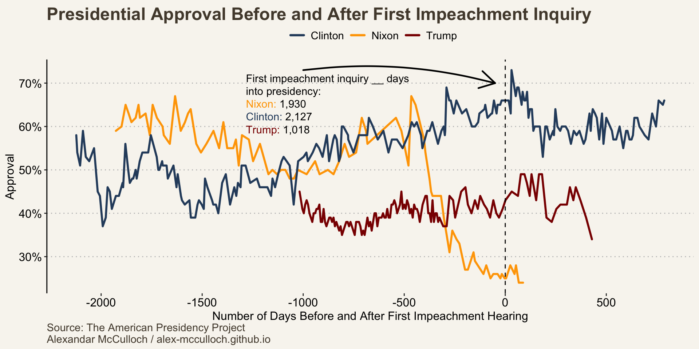
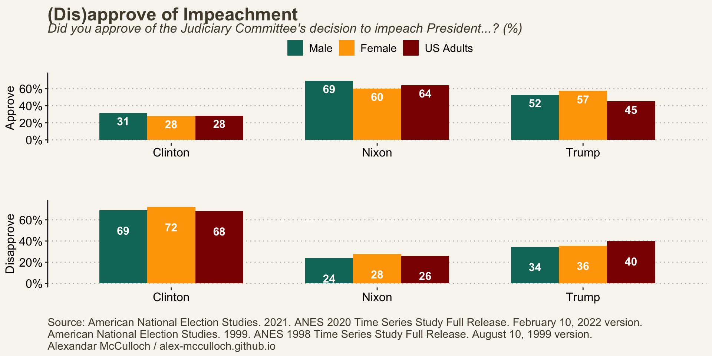
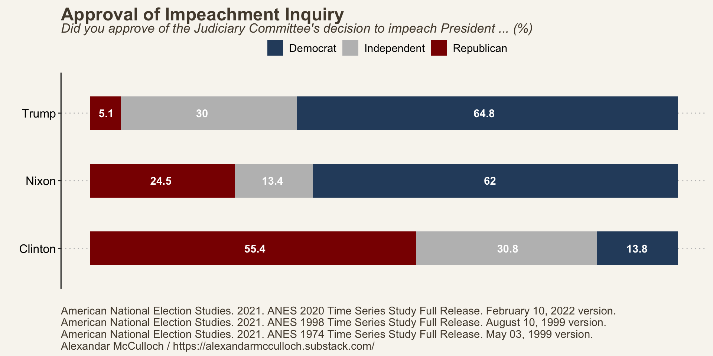
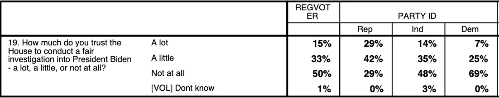

On September 28th, the House Committee on Oversight and Accountability held an inquiry into the impeachment of Joe Biden. House Republicans argue there is evidence of influence peddling based on Hunter Biden’s business dealings. Republican members outline their argument in a thirty-page memo. In it, Republicans claim that:
The Committees have accumulated significant evidence suggesting that President Biden knew of, participated in, and profited from his family’s international business activities. The evidence further suggests the President may have used certain members of his family—particularly his son, Hunter Biden—to accumulate millions of dollars from foreign individuals and entities for the benefit of his family and himself. In particular, the Committees have assembled information indicating that President Biden may have: (1) performed official acts or changed United States policy as a direct result of the foreign money received by his family; (2) provided access to his federal office in exchange for his family’s receipt of foreign money; and/or (3) knowingly participated in a scheme where foreign business interests were led to believe that they would gain access to him (in his official capacity) if they were to pay substantial amounts of money to his family.
This has come after a lengthy investigation into Hunter Biden’s overseas business deals. Republicans will attempt to link President Biden to any criminal wrongdoing committed by his son. If impeached, it is unlikely Biden will be removed by the Democratic majority Senate. The question remains whether this inquiry will substantially harm Biden’s reelection bid.
Americans are divided on a Biden impeachment inquiry
A recent ABC/Washington Post poll suggests Americans are split on whether Congress should conduct an inquiry. About 44% say Congress should begin proceedings, while 47% say Congress should not. As expected, polarization extends to this issue as well, with 74% of Republicans approving and 83% of Democrats disapproving of these proceedings. The interesting finding here is that independents are almost perfectly split, with 46% in favor and 45% opposed.
The number of those not convinced impeachment is warranted is down from a GBAO/Fabrizio, Lee & Associates poll for The Wall Street Journalconducted in August, which found that 52% of Americans oppose impeachment proceedings. However, it is slightly up from a YouGov poll in mid-September, which reported that 41% of Americans opposed impeachment.
Overall, Americans have not seen enough to adopt a pro-impeachment position. This may change as the proceedings develop, however, they were overshadowed by a looming government shutdown. The public will likely need distance from the current battle in Washington before it can articulate a cogent position on the matter.
More Americans support Hunter Biden’s indictment than a Joe Biden impeachment inquiry
Americans are more convinced Hunter Biden is guilty of committing a crime than they are of any criminal wrongdoing by Joe Biden himself. An Economist/YouGov poll found that 60% of Americans approve of the Hunter Biden indictment, which marks a 16-point difference in support for his father’s impeachment. A noticeable portion of Democrats (42%) and a majority of independents (55%) also express support for Hunter Biden’s indictment.
Casting Biden as a criminal profiting from the Oval Office might pose a challenge for Republicans. Americans already believe that four presidents—Biden, Trump, Obama, and W. Bush—have financially benefitted from holding office. However, the public strongly associates Biden with age-related issues and Trump with crime.
Hunter Biden’s legal issues do indeed have the potential to pose challenges for the Biden campaign. According to an Emerson College poll, 46% of respondents indicate that Hunter’s gun charges make them less likely to vote for Joe Biden in the 2024 election. However, a nearly equal 47% of respondents say that Donald Trump’s indictments make them less likely to vote for him in 2024. As it stands, neither Biden nor Trump appears to gain a clear advantage from the legal issues of the other.
Public reactions to past impeachments have been mixed
It’s hard to say how these impeachment proceedings will affect Biden’s approval. Based on the current polling, Republicans have a lot of work to convince voters that this inquiry is warranted. Impeachment is an extreme option to take. A rarity reflected in the number of presidents who have faced impeachment.
A mere four presidents have found themselves entangled in impeachment proceedings—Andrew Johnson, Richard Nixon, Bill Clinton, and Donald Trump—but none have been removed from office. Each impeachment inquiry and the subsequent votes to impeach these presidents were carried out against the backdrop of distinct and compelling circumstances.
Andrew Johnson: The 17th president was impeached by the House of Representatives in 1868 primarily because of his violation of the Tenure of Office Act. This act was designed to limit the President’s power to remove certain officeholders, including Cabinet members, without Senate approval. Johnson dismissed Edwin M. Stanton, his Secretary of War, and attempted to replace him with Lorenzo Thomas, a move that directly defied the Tenure of Office Act. This action by Johnson was seen as a violation of the law, leading to his impeachment by the House.
Richard Nixon: Nixon confronted the largest presidential scandal of the century. It was Nixon’s involvement in the Watergate scandal that prompted impeachment inquiries. Specifically, Nixon’s attempt to hinder the investigation—obstruction of justice—led to an impeachment inquiry. Nixon eventually resigned before the House had an opportunity to vote.
Bill Clinton: Clinton faced an inquiry on charges of perjury and obstruction of justice. The impeachment stemmed from his extramarital affair with Monica Lewinsky, a White House intern, and his attempts to cover up the affair during a deposition in a sexual harassment lawsuit filed by Paula Jones, a former Arkansas state employee. Clinton was accused of giving false testimony under oath about his relationship with Lewinsky and attempting to obstruct the investigation into the affair. The House of Representatives voted to impeach him on these charges on December 19, 1998. However, Clinton was acquitted by the Senate in 1999 and remained in office for the remainder of his second term as President.
Donald Trump: The first impeachment of Donald Trump was in December 2019. He was charged with abuse of power and obstruction of Congress. The charges were related to a phone call he had with Ukrainian President Volodymyr Zelensky, in which he allegedly pressured Ukraine to investigate Joe Biden, a political rival, and his son Hunter Biden. It was alleged that Trump withheld military aid to Ukraine as leverage. The House of Representatives, controlled by Democrats, voted to impeach him on December 18, 2019. However, the Senate, controlled by Republicans, acquitted him in February 2020.
The gravity of these accusations is reflected in the public response to impeachment proceedings. Nixon experienced a significant decline in public approval long before the first inquiry. He was publicly implicated in the Watergate break-in, which only contributed to the Nixon White House’s growing reputation as a corrupt administration, beginning with a bribery scandal from his former Vice President, Spiro Agnew. Nixon resigned about three months after his first inquiry hearing, leaving office with a 26% approval rating.
Clinton enjoyed a much different public reaction to his first inquiry. Overall, voters overwhelmingly disapproved of the Clinton impeachment. Slightly under 30% of respondents approved of such action, while 70.6% disapproved. Clinton even received a bump in his approval rating (66% to 73%) one month after the first impeachment hearing.
Trump faced harsher criticism as his impeachment hearings moved forward. Before the House’s first hearing, the majority of Americans believed an impeachment inquiry was unnecessary. This sentiment is reflected in the initial boost in Trump’s approval rating immediately after the first hearing, which increased from 43% to 49%, peaking a little over two months post-hearing.
However, as the Judiciary Committee continued its work, it successfully eroded the public’s doubts. After the House officially voted to impeach Donald Trump, more Americans approved (45%) of the decision than disapproved (39.9%). This division also extended along gender lines, with a higher percentage of women (57.1%) than men (52.4%) supporting Trump’s impeachment. This disparity may be attributed, in part, to partisan dynamics, as women were more likely than men to identify as Democrats, a group that overwhelmingly supported the impeachment proceedings.

As expected, there’s a clear partisan divide in the approval of impeachment inquiries. In cases where Republicans faced impeachment, the majority of those who approved were Democrats. Conversely, when it was Democratic President Clinton facing impeachment, Republicans comprised the majority of those in favor. Clinton and Trump faced a setback among independents, who accounted for 30.8% and 30% of those who supported their respective impeachments.

These cases prove that such an inquiry can benefit either party. In such a highly polarized and well-sorted era, it’s not likely a Nixon scenario will occur. Yet, the impeachment of the most recent president demonstrates that the public can indeed rally behind such action when deemed necessary.
Republicans have a lot of work to convince America of the value of an inquiry
Republicans have yet to provide strong evidence to justify a possible impeachment of Joe Biden. This may very well change. Democrats were able to present enough evidence for Americans to justify supporting the impeachment of Donald Trump. However, if Republicans have obtained strong evidence, it is strange to not present it in the first hearing.
The majority of the country does not support such an inquiry and 50% of voters do not trust that the House will conduct a fair investigation into President Biden. This includes 30% of Republicans and a plurality of independents (48%). Furthermore, 59% of Americans don’t believe any of Biden’s actions warrant impeachment, including three in ten Republicans. This is a severe gap for Republicans to overcome.

To make matters worse, impeachment has temporarily taken a backseat to a potential government shutdown, which was narrowly avoided. Congress managed to avert a shutdown by passing a stopgap measure that extends the deadline to November 17. Shutdowns have historically harmed Republicans in the short term and a recent Morning Consult poll illustrates this trend as one in three voters would have blamed Republicans if it had occurred.
The timing of the impeachment hearing may not be ideal for Republicans to effectively sway public opinion in their favor, especially as the public’s attention is currently focused on budget negotiations.
Citation
BibTeX citation:
@online{mcculloch2023,
author = {McCulloch, Alexandar},
title = {How {Americans} {Feel} {About} a {Potential} {Biden}
{Impeachment}},
date = {2023-10-03},
url = {https://alex-mcculloch.github.io/posts/2023-10-03-biden-impeachment/},
langid = {en}
}
For attribution, please cite this work as:
McCulloch, Alexandar. 2023. “How Americans Feel About a Potential
Biden Impeachment.” October 3, 2023. https://alex-mcculloch.github.io/posts/2023-10-03-biden-impeachment/.